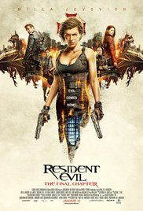
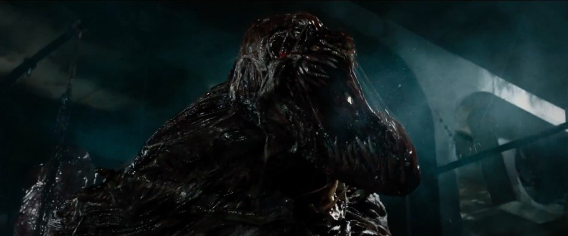
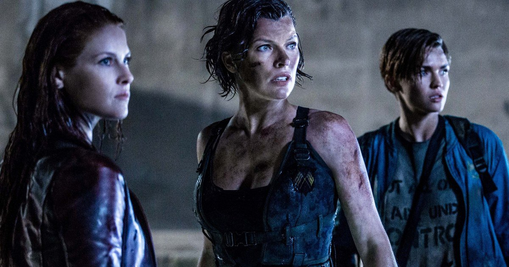

Introduction 1
Synopsis 2
Review 3
Cast and Characters 4
Conclusion 5
Bibliography 6
Resident Evil: The Final Chapter is a 2016 science fiction action horror film written and directed by Paul W. S. Anderson. It is the sequel to Resident Evil: Retribution (2012) and the sixth and final installment in the Resident Evil film series, which is loosely based on the Capcom survival horror video game series Resident Evil. The film stars Milla Jovovich, Ali Larter, Shawn Roberts, Ruby Rose, Eoin Macken, William Levy, Lee Joon gi and Iain Glen. In the film, Alice and her friends are betrayed by Albert Wesker, who gathers the entire forces of Umbrella into one final strike against the apocalypse survivors. It was released on December 23, 2016 in Japan[5] and on January 27, 2017 in the United States in 2D, 3D and IMAX 3D. The film received mixed reviews, although it was considered an improvement over previous installments, and has grossed $80 million worldwide.[6]
Flashbacks reveal that Dr. James Marcus, the original founder of the Umbrella Corporation, had a daughter who was dying of premature aging. Desperate to save her, Marcus developed the T-virus as a way to cure all diseases on Earth. After having had his creation taken away from him, Marcus' business partner Dr. Alexander Isaacs (Iain Glen) tried to convince Marcus to use the T-virus for military purposes. When he refused, Isaacs ordered Albert Wesker (Shawn Roberts) to kill Marcus. Picking up three weeks after the events of the previous film, Alice (Milla Jovovich) awakens in the now-ruined White House, after being betrayed once again by Wesker. While searching for survivors, the Red Queen (Ever Gabo Anderson) appears and tells Alice that she must return to the Hive in Raccoon City within 48 hours, where the Umbrella Corporation has developed an airborne antivirus, which will kill every organism infected by the T-virus, before the remainder of humankind is wiped out. When asked why she's betraying her creators, the Red Queen simply says that she will tell Alice once she arrives at The Hive. On her way to Raccoon City, Alice is captured by Isaacs, whose clone Alice previously killed, but she manages to escape his convoy. Alice later arrives in the now-destroyed Raccoon City and is captured by a group of survivors, consisting of Doc (Eoin Macken), Abigail (Ruby Rose), Christian (William Levy), Cobalt (Rola), Razor (Fraser James), and Claire Redfield (Ali Larter), who is revealed to be alive after the attack on Arcadia. After learning that a group of armored vehicles and a horde of zombies is coming their way, the group prepares to make their last stand. They manage to defeat the enemy forces, although Cobalt is killed in the process. The group later realizes that a second horde is coming in their direction. With no defenses left, Alice and the crew decide to get to the Hive entrance, located at the bottom of the atomic bomb crater which destroyed the city. However, Wesker, having taken control of the Hive, releases mutated guard dogs, killing Christian. Upon arriving at the Hive, the Red Queen appears again and explains the reason of her betrayal. It is revealed that someone uploaded a video recording of the Umbrella executives, including Isaacs, formulating a plan to release the T-virus on purpose in order to cleanse the world, save the rich and powerful with cryogenic capsules hidden in the Hive, and later rebuild the world in their image. The Red Queen, although programmed to never hurt an Umbrella employee, was also programmed to value human life, which is why she enlists Alice's help in order to stop Isaacs. The Red Queen also warns Alice about one of the group being a spy for Umbrella.
Once one is acclimated to this chaos-cinema form, even if it’s a bit more assaultive in post-converted 3D, the writer-director’s simultaneous economic storytelling and boyish imagination come into clear view.
Milla Jovovich as Alice / Alicia Marcus Ali Larter as Claire Redfield Shawn Roberts as Albert Wesker Ruby Rose as Abigail Eoin Macken as Doc William Levy as Christian Iain Glen as Dr. Alexander Isaacs Lee Joon-gi as Commander Chu Rola as Cobalt Ever Gabo Anderson as Young Alicia / Red Queen Fraser James as Razor
Though it retains some of the clumbiness that haunts this film series, Resident Evil: The Final Chapter offers the most pleasing installement, with its cinematography and pacing well executed enough, and with highly quircky action sequences, to provide an enjoyable (if not often harmed by its simplicity) final ride in the zombie wasteland.
Works Cited "Resident Evil: The Final Chapter." Wikipedia. Wikimedia Foundation. Web. 02 Feb. 2017.